大事紀
醫學模擬教育大樓開幕暨揭牌茶會


臺北醫學大學自102年起成立「醫學模擬教育中心」，英文名為「Center for Education in Medical Simulation」，簡稱為CEMS，106年5月起搬遷至大安校區，我們塑建一個創意教學模擬環境，醫學模擬教育中心從CEMS 1.0蛻變成CEMS 2.0。而在112年的今日，我們經歷十年的淬鍊，誕生一座全新的醫學模擬教育大樓。這座大樓的開幕，標誌著北醫大對臨床教育的不斷創新，顛覆過去僅以模型為主軸的實體模擬，跨入虛擬教學實境VR的新紀元，新的CEMS 3.0將繼續為醫學教育努力。
感謝財團法人旺英基金會捐款
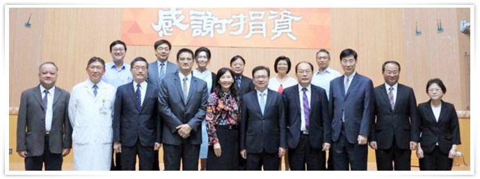
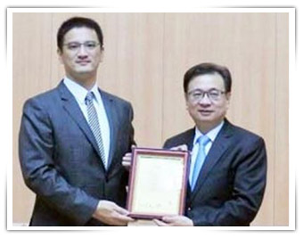
臺北醫學大學於2019年9月11日在誠樸廳舉行的108學年度第2次行政會議中，公開感謝捐款人對北醫大的支持與貢獻，當日由財團法人旺英衛教基金會黃詩鈞執行長出席，捐資共計630萬元，其中醫學模擬教育中心基金為50萬元。
旺英高階模擬教室揭牌典禮
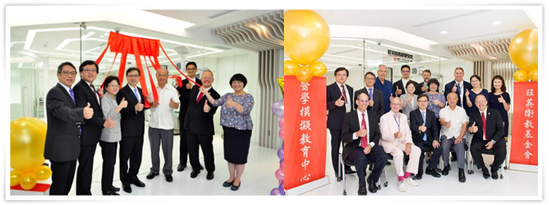
2018年8月4日由林建煌校長、朱娟秀教務長、蘇維文公共事務長與旺英衛教基金會黃正勝董事長、黃詩鈞執行長共同舉行旺英高階模擬教室揭牌儀式！為醫學模擬教學硬體設備更進一步！
榮獲歐洲醫學年會ASPIRE獎項
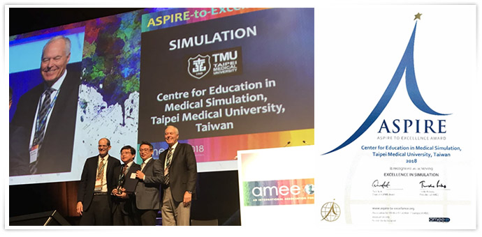
醫模中心以完善的模擬師資群、教案及課程獲得歐洲醫學年會組織The Association for Medical Education in Europe (AMEE)頒發2018年ASPIRE獎項(Simulation)，為目前亞太地區第一間獲獎的醫學院校。
協助2017臺北世大運XVR災難應變系統演習
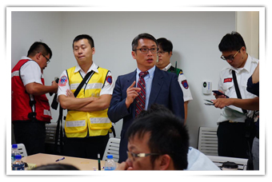
臺北醫學大學醫學模擬教育中心（Center for Education in Medical Simulation, CEMS）首度引進「XVR 災難應變」系統平臺，於 2017 年 5 月 17 日與北市府消防局簽訂合作備忘錄，模擬各種可能發生的重大災 害，指揮官透過 3D 實地模擬情境演習實際調度搶救，並讓消防救災及醫療體系能 在最短時間內同步到位，將傷害程度降到最低。
醫模2.0開幕茶會暨揭牌儀式
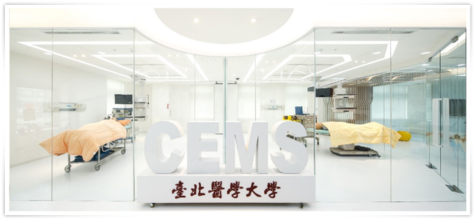
臺北醫學大學醫學模擬教育中心(Center for Education in Medical Simulation, CEMS)為校級中心，主責規劃與推動北醫大體系(一校五院)內的模擬教育。經過三年札穩的經營，在匹茲堡大學前國際模擬醫學會主席Dr.Paul Phrampus顧問指導下，成為亞洲為一同時獲得國際模擬醫學會(Society for Simulation in Healthcare, SSH)評鑑中「評核/教學」雙認證肯定的訓練中心。 邁入新世紀的模擬教育下，北醫大在大安校區塑建一個創意教學模擬環境，代表著醫學模擬教育中心從CEMS1.0蛻變成CEMS2.0，將於2017年5月17日開幕，顛覆過去以模型為主軸的實體模擬，跨入虛擬教學實境VR的新紀元。
通過SSH學會認證
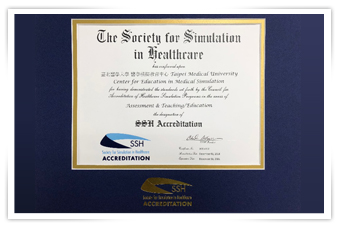
臺北醫學大學教務處醫學模擬教育中心於2016年12月9日通過世界模擬醫學會(Society for Simulation in Healthcare, SSH)評鑑認證，為目前台灣唯一通過的醫學模擬教育中心，也是亞洲唯二通過了「考核」及「教學」這兩個主要項目的評鑑的單位。
感謝財團法人旺英基金會連續三年捐贈
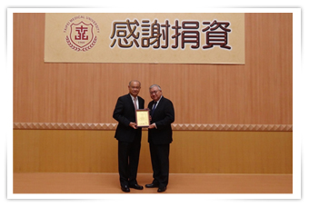
感謝財團法人旺英衛教基金會連續三年捐贈本中心，用以發展本校模擬教學，精進模擬教師實務教學能力，縮短教學理論與實務差距，藉由模擬方式讓學生運用所學於臨床實務及精進實務技能。
醫學模擬教育中心揭牌儀式
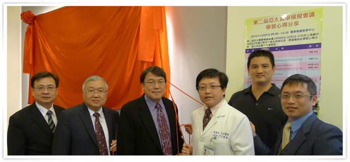
「臨床技能中心」自102學期起擴大為「醫學模擬教育中心」，於102年11月22日進行揭牌儀式，並於揭牌當日舉辦「第二屆亞太醫學模擬會議學習心得」分享，期望藉由學習心得分享，強化本校醫學模擬教育。
本中心由吳建志主任及林哲瑋執行長領導單位同仁-林小喬與蔡宜倢進行全校模擬教育資源整合，以有效利用現有空間與硬體設施列為首要目標，致力於培育模擬醫學師資，研發適用於各系所之教案，將模擬醫學導入常態化教學，進而辦理模擬醫學校際研討會，分享本校模擬教育方法與成果且實現產學合作，創新研發模擬教育器材。
本校為醫學專業大學，多數學生必須面對與病人生死直接相關職場，為使學生畢業前及進入臨床實習乃至銜接未來醫療執業時，能正確運用在學校所習得之知識、技能及態度，必須運用模擬教學系統，培育優質臨床師資及整合學生在臨床訓練課程，以提升臨床教學的效能。「模擬教學」係藉由臨床情境的模擬，導入標準化病人、虛擬病人或高擬真模擬假人，讓學生在進入醫院實習實際接觸病人之前，就可在教室裡透過模擬演練，培養學生學到面對病人、處理疾病的能力。
感謝財團法人旺英基金會捐贈
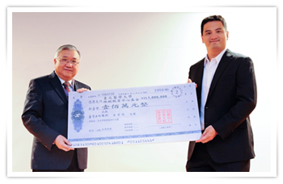
感謝財團法人旺英文教基金會
捐贈臺北醫學大學醫學模擬教育中心100萬元新台幣
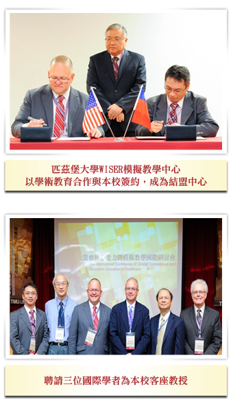
見賢思齊
102年6月22日-23日與美國匹茲堡大學WISER模擬教學中心簽訂學術教育合作，並舉辦「醫療核心能力暨模擬教學國際研討會」，難能可貴地邀請到模擬教育中標準化病人、虛擬病人及高階模擬人三領域的國際學者：世界模擬醫學會主席Prof.Paul Phraumpus、南伊利諾大學醫學院的創辦人與終身教授Prof. Hurley Myers、著名標準化病人及身體理學檢查（Physical Examination）教科書作者中唯一還健在的教授Prof. Mark Swartz來台講學，並在會中聘請三位國際講者為臺北醫學大學客座教授。